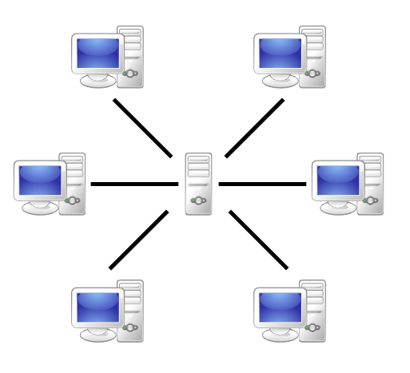
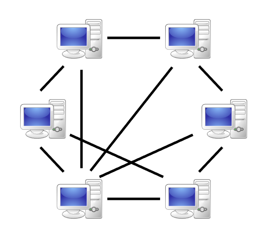
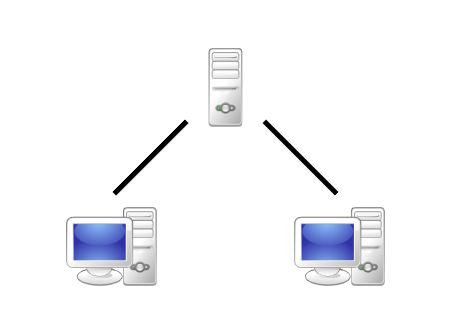
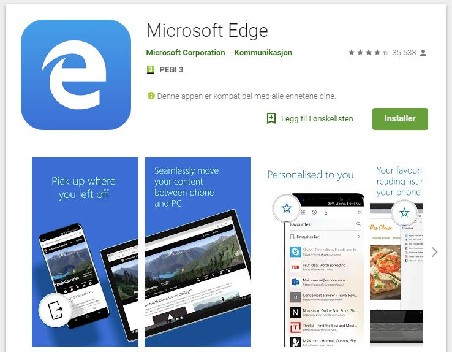
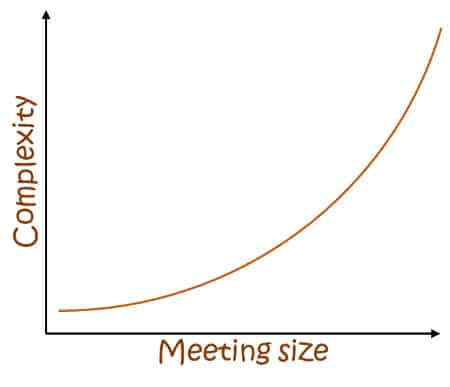
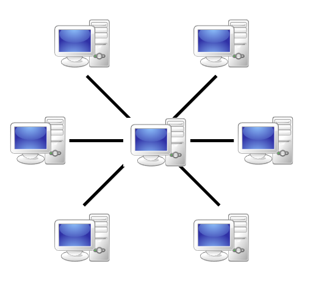
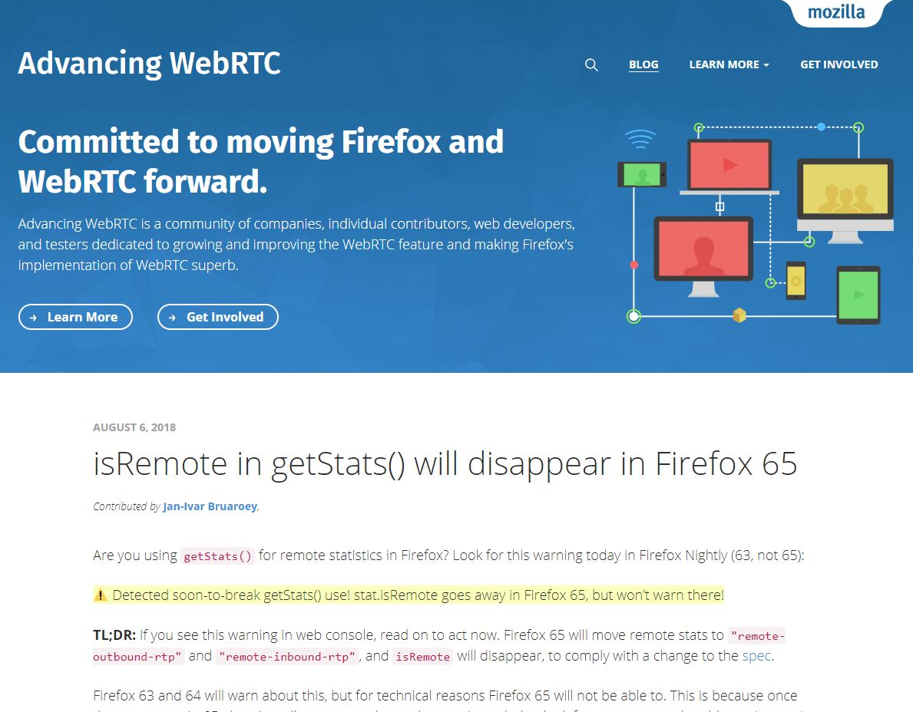

Firestore
Jan Greger Hemb
Senior knowledge engineer at Computas
bit.ly/webrtc2018
Featuring the unstoppable Data Channel!
You don't need to know WebRTC
The journey to the data channel
- Basic WebRTC (intro)
- Story and demo
- Connecting users
- The Data channel
- Browser support
- News
- Call to action
In a nutshell, what is WebRTC?
- Direct browser-to-browser communication API
- API for real time communication
- Websocket directly between browsers
- Channels for video, audio and data
- Media engine
- API for creating Skype in the browser
Traditional model
A server in the middle
Skip the middle man!
Communicate directly
Two browsers can NOT contact each other directly
Need a signaling server
Signaling
Hiccup in the learning curve

Had some difficulties while creating this presentation
How I learned WebRTC
And found the mysterious data channel
One late night in 2017...
Then I found a few tutorials with signaling
Then I found the one
Connected!
In the dirtiest way possible
Then I saw it in the distance
The Data Channel
Data, Chat and Files
Limitless, permissionless potential
Demo
Code on github, can run all locally
github.com/JGH153/webrtc
Frontend in Angular and backend in NodeJS
How does it work
- Canvas for drawing
- Websocket for signaling
- Nodejs backend for matching
- Connect two users
- Send any draw event using WebRTC
A deeper dive into WebRTC
How does it work?
navigator.mediaDevices.getUserMedia({ video: true, audio: true })
.then(function(mediaStream) {
var video = document.querySelector('video');
video.srcObject = mediaStream;
}
const configuration = {
iceServers: [{ urls: 'stun:stun2.1.google.com:19302' }]
};
const myRtcConnection = new RTCPeerConnection(configuration);
localVideoStream.getTracks().forEach((currentTrack: MediaStreamTrack) => {
myRtcConnection.addTrack(currentTrack);
});
Handling the other users video/audio when it arrives
myRtcConnection.ontrack = (event) => {
// use event.streams (like video element)
}
Data channel
const options = {
// Reliable(ordered) is now default
};
const myDataChannel = myRtcConnection.createDataChannel("label", options)
myRtcConnection.ondatachannel = (event) => {
event.channel.onmessage = (event) => {
// got a message
}
}
myDataChannel.send( "Some data" );
Connecting to another browser
Meet at a signaling server
Does not technically need a signaling server
Suggest using WebSocket
Time to make the call
Create and send an offer (RTCSessionDescription)
myRtcConnection.createOffer().then(offer => {
sendMessageToServer(offer, "User B");
myRtcConnection.setLocalDescription(offer);
}
Responding with an answer
myRtcConnection.setRemoteDescription(offer);
myRtcConnection.createAnswer((answer) => {
sendMessageToServer(answer, "User A");
myRtcConnection.setLocalDescription(answer);
}
// on caller's side
myRtcConnection.setRemoteDescription(answer);
Time for some ICE
myRtcConnection.onicecandidate = (event) => {
sendMessageToServer(event.candidate, "Other User");
}
// on the other client:
myRtcConnection.addIceCandidate(new RTCIceCandidate(candidate))
Time to connect
// Automagick
Might fall back to TURN
Connected!
Summary
- Shared backend
- CreatePeerConnection with STUN (local)
- Video, sound, data
- Send offer, and receive answer
- ICE candidates for mapping the network
- Maybe fall back to TURN
Connected!
Diving into the data channel
Can send (almost) anything
Examples
- Sending chat
- Sending files
- Sending state (game, redux, drawing, ...)
- Bit torrent
- Data streaming
- Decentralized computing
- CDN
Without asking for permission
How to connect using only the data channel
Same as before, just with some changes
Remove the following code
navigator.mediaDevices.getUserMedia( ... ) .then{ ... }
myRtcConnection.addTrack(...)
myRtcConnection.ontrack = (event) => { ... }
Using the Data Channel
Let's look at a few examples
Secure E2E Chat
// sender
myDataChannel.send("Hello");
// on the receiving side
receiveChannel.onmessage = (message) => {
// Display message
};
// sender
const fileReader = new FileReader();
const fileSlice = file.slice(offset, offset + chunkSize);
fileReader.readAsArrayBuffer(fileSlice);
fileReader.onload = (event) => {
myDataChannel.send(event.target.result);
}
// on the receiving side
incomingFileBuffer.push(arrayBuffer);
// when done on the receiving side
var receivedFile = new Blob(incomingFileBuffer);
Sharing a game state
Like the drawing app
Sending entire state VS state change
// send
myDataChannel.send(JSON.stringify(completeState or stateChange));
// receiver
receiveChannel.onmessage = (messageEvent) => {
const state = JSON.parse(messageEvent.data);
}
Large Data Channel Messages
EOR (End Of Record)
Is the message complete, or partial?
"Thanks to the new EOR feature Firefox now supports receiving up to 1 GiB messages."
Was around 64 KiB
It's backward compatible
Browser support
Let's talk about Safari
It's experimental and buggy
"Safari fails to establish a connection unless getUserMedia is called"
"Contrary to Chrome and Firefox, we do not leak private IP addresses access unless camera or microphone access is also granted."
It has recently been fixed!
WebRTC only works in safari on iOS
Browser difference
| Browser | Quirk |
|---|---|
| Firefox | Most up to date with the spec |
| Chrome | Good, but behind FF |
| Safari | Recent. Data channel issues (to be fixed) |
| iOS | Only safari (coming to other browsers) |
| Android | FF, Chrome and Samsung |
| Edge | No data channel. Object RTC |
| IE 11 | 😂 |
Microsoft Edge for Android
Security
"A Study of WebRTC Security"
"As a result of this strong focus on secure communication, WebRTC is currently regarded by some to be one of the most secure VoIP solutions out there"
"If I wanted to hack you, WebRTC would be the last place I’d start."
"It is encrypted. By default. And there’s no way to remove that encryption from occurring"
Room size
The server-client model
Peer to Peer
Room size
Stopping at 10 is a good place for video
Data can go much higher
All depends on the structure and amount of data
Data channel Host
One person being the host and master

Latest news for WebRTC 📰
WebRTC is a Candidate Recommendation! 🎉
As of 21 June 2018
Sharing screen (without a plugin)
navigator.getDisplayMedia({ video: true })
.then(function(mediaStream) {
...
}
getUserMedia vs getDisplayMedia
Only supported in Edge
Transceiver
- New (and optional) way of having more control over how media flows between clients
- More control for more complexity
- Can start sending video before negotiation has completed
- Transceiver will allow you to distinguish between several incoming video streams
Data Channel ideas
Live, shared, presentation
Offloading data transmission to the frontend
Servers are (relatively) expensive
Can use WebRTC for signaling

The examples can be solved using a server
But now we have a direct option
"in almost all cases, using WebRTC will cost you less and get you there faster than the alternatives"
WebRTC is a building block for the web of tomorrow
You will need it, for video, audio or data
We are approaching an ever more connected future and WebRTC will help you create that future
It's gratis!
(except for signaling and TURN)
blog.mozilla.org/webrtc/
Consider using WebRTC adapter
github.com/webrtchacks/adapter
The end of our Journey
Questions?
bit.ly/webrtc2018demo
webrtc 2018 demo
Bonus slides!
To send data reliably, or not
Why send unreliable?
Speed
RTCRtpTransceiver.direction
| State | Description |
|---|---|
| "sendrecv" | Sending and receiving |
| "sendonly" | Sending |
| "recvonly" | Receiving |
| "inactive" | Nothing/disabled |
🗡️ Chrome is killing background tabs! 🗡️
But WebRTC is (mostly) safe